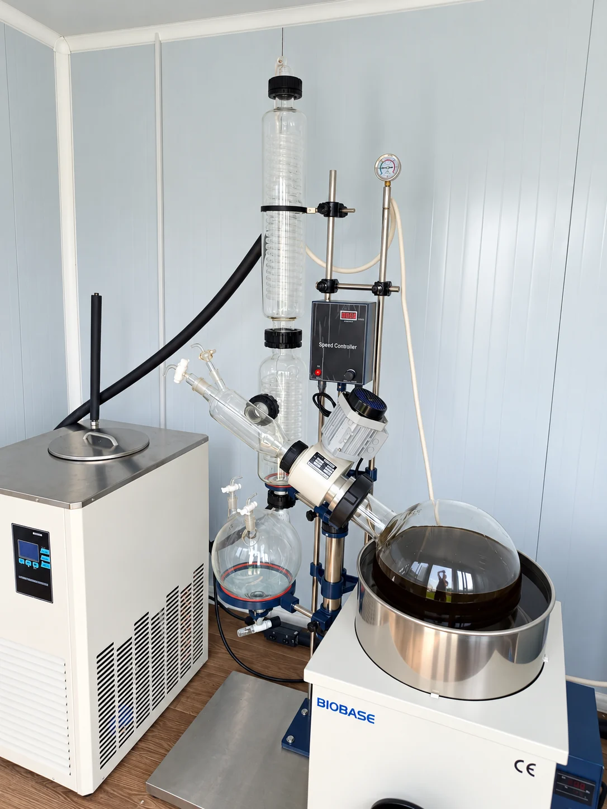
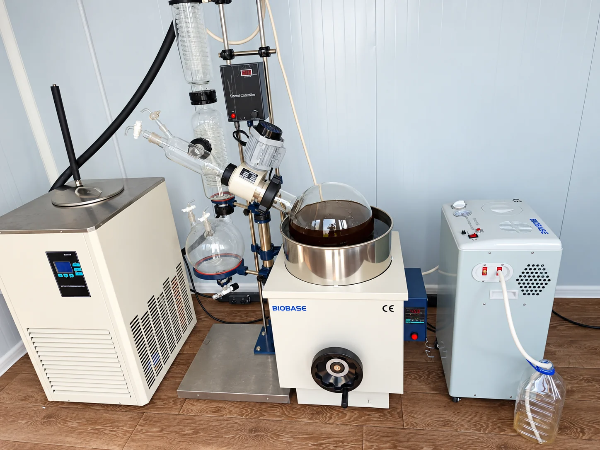
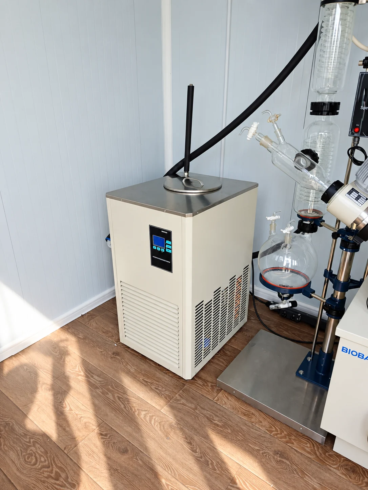
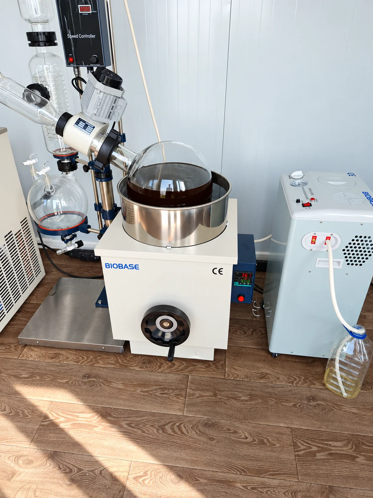
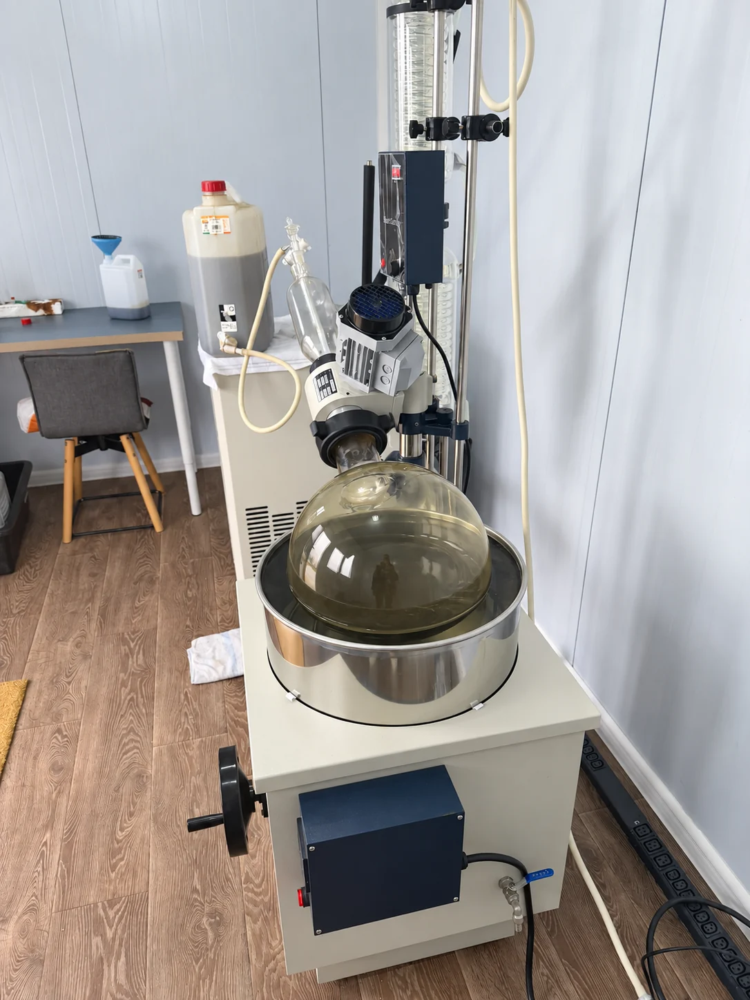
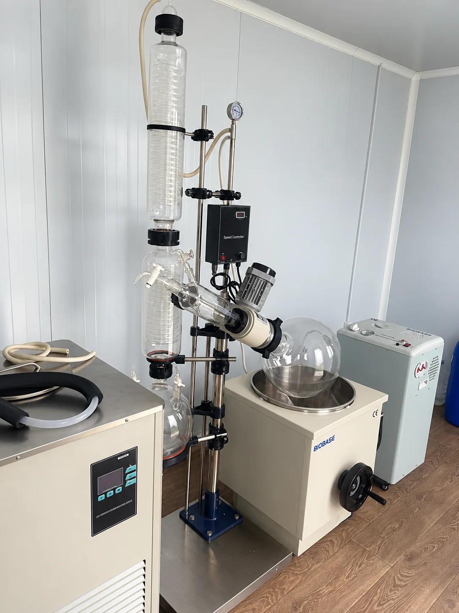
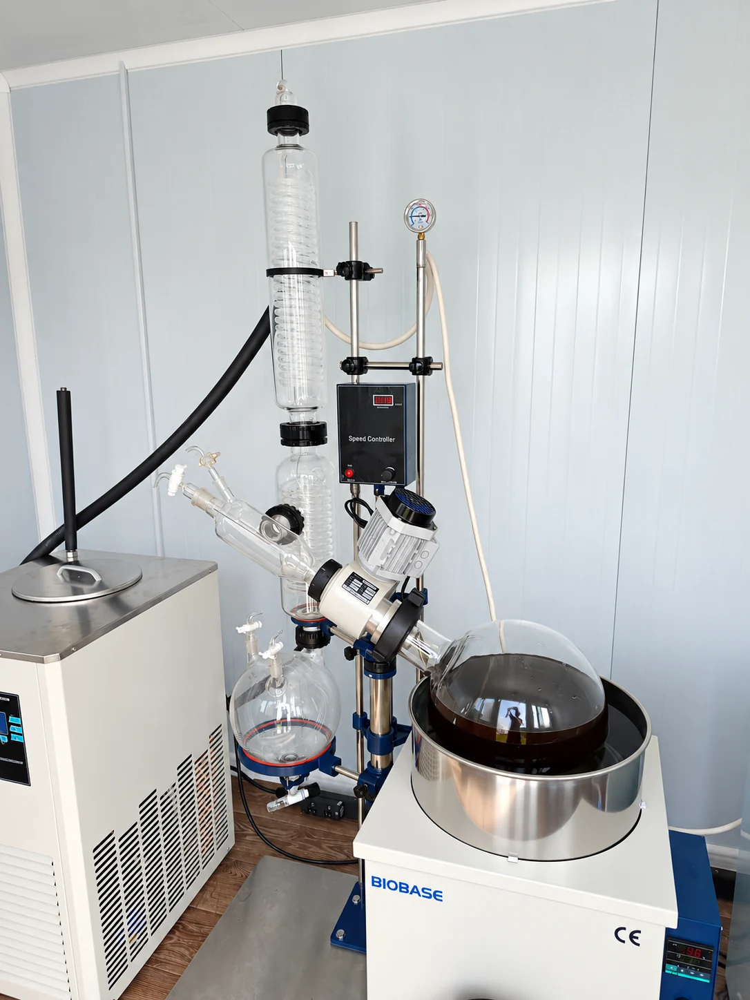

01
Rotacijski evaporator
RE-2002 · 20 L rotacijska tikvica · 10 L sabirna tikvica.
PILOT PROCESSING · SLAVONIJA & BARANJA
Uslužno vakuumsko uparavanje, koncentriranje i obrada manjih serija na funkcionalnom 20 L sustavu OPG ERA.

Stvarna oprema u pogonu OPG ERA · 2026.
01 · OPREMA
Konfiguracija je namijenjena vakuumskom uklanjanju otapala i koncentriranju tekućih ekstrakata u pilot mjerilu.

RE-2002 · 20 L rotacijska tikvica · 10 L sabirna tikvica.

DLSB-20/40 · stabilna cirkulacija i kontrolirano hlađenje procesa.

SHZ-95B · podrška za rad pri sniženom tlaku i nižoj temperaturi procesa.
* Konačna prikladnost procesa ovisi o materijalu, otapalu, temperaturi i sigurnosnim uvjetima. Svaki posao prolazi prethodnu tehničku procjenu.
02 · USLUGE
Za korisnike kojima kupnja vlastitog pilot-sustava nema ekonomskog smisla ili trebaju povremeni dodatni kapacitet.
Kontrolirano uklanjanje hlapive komponente pri sniženom tlaku.
Obrada prethodno pripremljenih tekućih biljnih i drugih kompatibilnih ekstrakata.
Praktičan korak između laboratorijskog uzorka i veće proizvodne skale.
Mogućnost dogovora za istraživačke, razvojne i validacijske projekte.
03 · PROCES
Vrsta materijala, volumen, otapalo i željeni rezultat.
Provjera može li se posao sigurno i smisleno izvesti na postojećoj opremi.
Dogovor termina, evidentiranje ulaznog materijala i izvedba procesa.
Završetak procesa, osnovni zapis i preuzimanje obrađenog materijala.
04 · PILOT CJENIK
Orijentacijski cjenik za uhodavanje usluge. Konačna ponuda ovisi o materijalu i zahtjevnosti procesa.
STANDARDNA SERIJA OBRADE
do 3 sata rada sustava
05 · POGON



LOKACIJA
Pilot-pogon u sklopu OPG ERA, uz postojeću poljoprivrednu infrastrukturu.
06 · FAQ
Vrstu materijala, približan volumen, korišteno otapalo ako postoji, cilj obrade i očekivani termin.
To nije standardni model. Samostalno korištenje moguće je samo uz poseban dogovor, procjenu osposobljenosti, odgovornosti i sigurnosnih uvjeta.
Ne bez prethodno dogovorenih mjerljivih parametara i karakteriziranog ulaznog materijala. Rezultat ovisi o sastavu i procesnim uvjetima.
Ne. Pilot je zamišljen šire za zakonite i dokumentirane biljne ili druge kompatibilne materijale, ovisno o tehničkoj i regulatornoj procjeni.
07 · TEHNIČKI UPIT
Ovo je pilot-obrazac. Ne šalje podatke na server; služi za prikaz buduće funkcionalnosti web stranice.